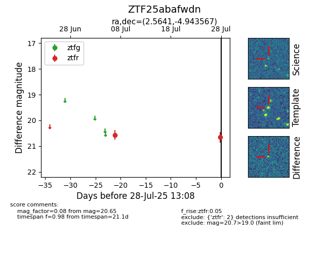

Target ZTF25abafwdn at 2025-07-28 13:08, see:
FINK: fink-portal.org/ZTF25abafwdn
Lasair: lasair-ztf.lsst.ac.uk/objects/ZTF25abafwdn
ALeRCE: alerce.online/object/ZTF25abafwdn
alt names
ZTF25abafwdn (ztf,fink)
coordinates:
equatorial (ra, dec) = (2.5641,-4.94357)
galactic (l, b) = (97.2502,-65.74072)
photometry
last ztfr=20.65
2 ztfr detections
